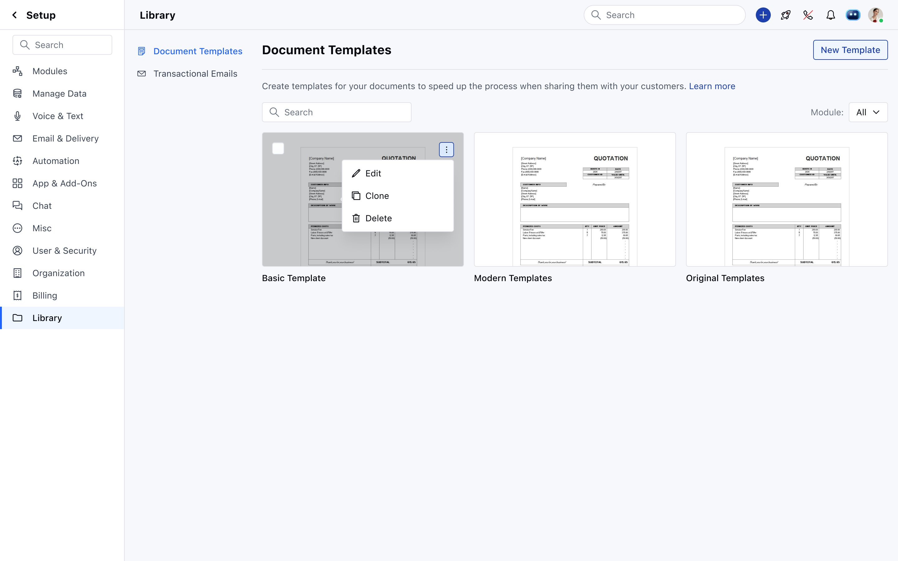
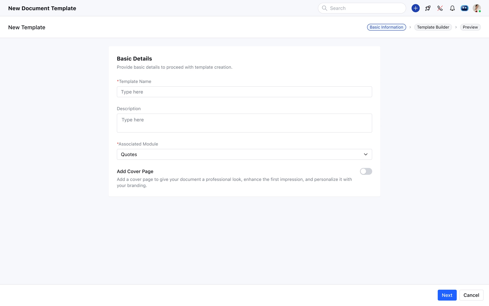
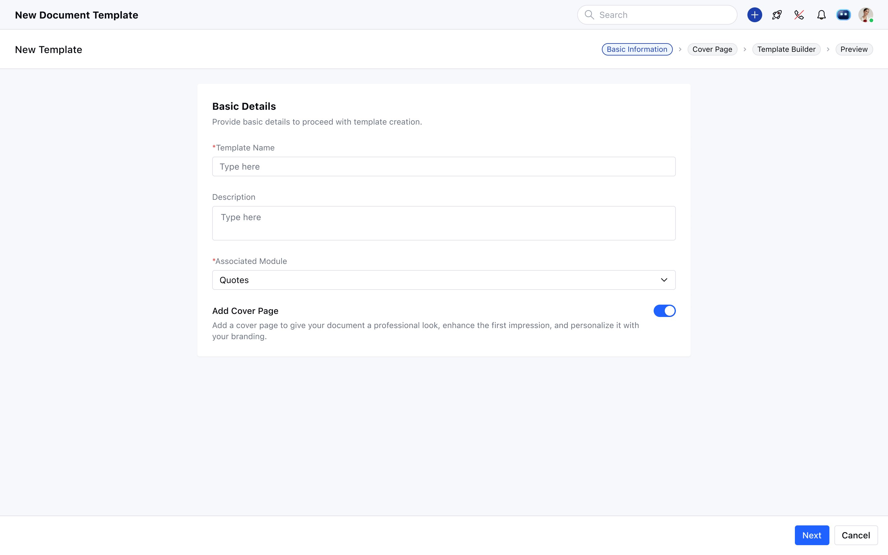
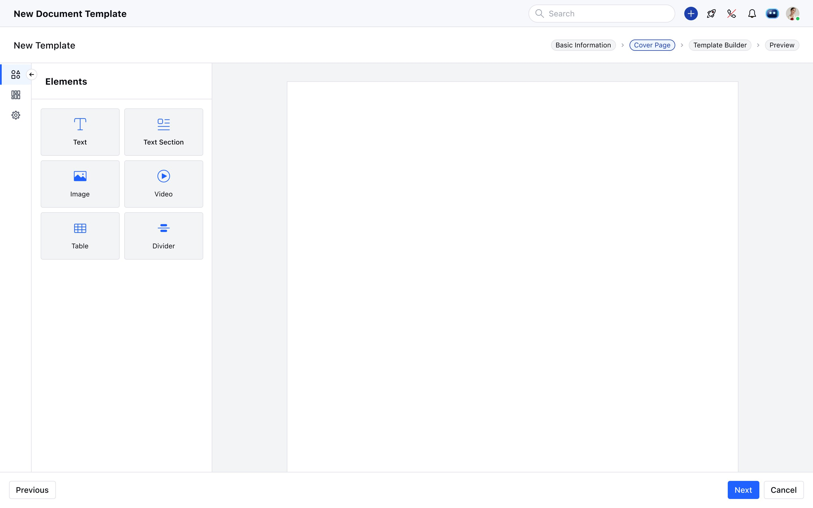

A reusable quote document system with cover pages, watermarks, and brand customisation - built directly into the Salesmate Library.
Template Library - Three default templates
salesmate.io · Document Templates
Document Templates listing - Basic, Modern, and Original default templates with Edit/Clone/Delete actions
Role
Product Design Lead
Module
Setup · Library
Scope
Quotes module
Status
Live · Shipped
Tools
Figma Design · FigJam
01
Overview
Document Templates lets Salesmate users create, manage, and reuse branded document layouts for the Quotes module only. This feature is scoped exclusively to quotes - it does not apply to other CRM modules. Instead of building a quote document from scratch each time, teams create a template once - with cover page, content layout, header/footer, and watermark - and apply it whenever they generate a quote.
Three default system templates ship with every account (Basic, Modern, Original) - read-only, but cloneable as a starting point. Users with "Manage Document Template" permission can create, edit, clone, and delete custom templates. A template cannot be deleted while actively in use by open quotes - only once those quotes reach completed status or are hard-deleted.
02
Design Decisions
A
Template Management
Card Grid Library with Safe Delete Rules
Templates are displayed as a card grid showing a visual preview of the document layout - not just a text list. This helps users immediately distinguish between templates without opening each one. The three-dot actions menu on each card gives quick access to Edit, Clone, and Delete. Selecting a card enters a bulk-action mode that surfaces a top-bar Delete button - useful for cleaning up multiple custom templates at once. Default templates (Basic, Modern, Original) show no Delete option - they can only be cloned. The delete restriction for actively-used templates is enforced silently - users simply can't trigger the action if it would break an open quote.
Screens - Library with actions menu + bulk selection mode
salesmate.io · Document Templates

Template listing - three-dot menu with Edit, Clone, Delete on Basic Template
The template creation flow uses a top stepper to show the user exactly where they are. By default it's three steps: Basic Information → Template Builder → Preview. When the user enables the "Add Cover Page" toggle on the Basic Information screen, a fourth step is inserted between Basic Information and Template Builder - and the stepper updates immediately to show the new path. This is a clean example of progressive disclosure: the Cover Page step only exists in the flow if the user opted into it. The toggle description reads "Add a cover page to give your document a professional look, enhance the first impression, and personalise it with your branding" - setting the purpose clearly before the user commits.
Screens - Basic Information: Cover Page toggle OFF vs ON
salesmate.io · Document Templates

Cover Page OFF - 3-step flow: Basic Information → Template Builder → Preview
salesmate.io · Document Templates

Cover Page ON - 4-step flow: Basic Information → Cover Page → Template Builder → Preview
C
Cover Page Builder
A Focused Canvas - Limited Elements by Design
The Cover Page step uses a simplified version of the Template Builder - same left-panel element picker, same canvas-based editing, but with a deliberately limited element set: Text, Text Section, Image, Video, Table, and Divider. No header or footer. One cover page maximum per template - there's no way to add a second. Design Settings give control over background colour, opacity, padding, row margins, background image (fill, fit, or original size), image position (9-point grid), image repeat, and image opacity. This scoped set of options keeps the cover page focused on first impressions - a visual intro page - rather than becoming a second content area.
Screen - Cover Page builder step with Elements panel
salesmate.io · Document Templates

Cover Page step - Elements panel (Text, Text Section, Image, Video, Table, Divider) with blank canvas
D
Design Settings - Watermark
Branding, Copyright, or Security Watermarks - Per Page Control
Watermark Options live in the template's Design Settings sidebar. Users choose None, Text, or Image. Both text and image watermarks support direction (diagonal, horizontal, vertical), scale (1–100%), and opacity - giving control over how dominant or subtle the watermark appears. Text watermarks add font family and text colour options; the default colour is #5148E5. Image watermarks support PNG/JPG uploads up to 5MB with a default opacity of 14% - intentionally faint. The watermark applies to all pages by default. For pages where it's not wanted, each page has its own Actions menu → Page Settings → "Apply Watermark" toggle - a per-page override that doesn't affect the rest of the template.
Text Watermark
Options
Text content (max 50 characters)
Direction - 9 diagonal, horizontal, and vertical options
Font Family - selectable typeface
Text Color - default #5148E5
Scale - 1 to 100%, default 20%
Image Watermark
Options
Background image upload - PNG, JPG, JPEG, max 5MB
Image Opacity - 0 to 100%, default 14%
Direction - 4 options (diagonal + horizontal + vertical)
Scale - 1 to 100%, default 20%
Per-page override via Page Settings → Apply Watermark toggle
03
Feature Summary
3 Default Templates
Basic, Modern, and Original ship with every account. Read-only - users clone them to customise rather than editing originals.
Safe Delete Logic
A template in active use by open quotes cannot be deleted. Only templates used in completed or hard-deleted quotes are deletable - preventing broken documents.
Cover Page Toggle
A single toggle on the Basic Information step inserts the Cover Page step into the creation flow - progressive disclosure that doesn't add complexity for users who don't need it.
Cover Page Elements
Text, Text Section, Image, Video, Table, Divider - a scoped set focused on first-impression design. No header/footer. One cover page per template maximum.
Text & Image Watermarks
Applied globally across all pages from Design Settings. Each page can override via its own Page Settings panel - turn off the watermark for specific pages without affecting others.
Clone & Search
Any template can be cloned as a starting point for a new one. Templates are searchable by name - filter by module also available for future multi-module expansion.
04
Outcome
Reusable & Consistent
Teams create a quote template once and reuse it across all quotes. Three default templates mean teams can start sending branded quotes immediately - no setup required.
Brand-Ready Documents
Cover pages, watermarks (text or image), company logo, and background image controls give teams the tools to produce professional, on-brand quote documents directly from the CRM.
Safe by Default
Default templates can't be deleted. Active templates can't be deleted. Every design decision defaults to the safest state - users only unlock more if they deliberately opt in.